The interest bill, the shortening stock, and who bears the rate risk: what the per-security register says now, and what four 2027 political configurations do to it.
The Redbox register holds every OAT, BTAN, OATi, OAT€i and BTF the AFT has listed since January 1999: 1,603 securities, positions rolled back from the AFT's encours pages through its auction histories, with the office's own daily indexation coefficients for the 35 linkers (D-S10-007). At the 10 September 2026 snapshot the register carries €2,862bn nominal, €2,937bn once linkers are uplifted: bills €218bn, fixed-rate €2,404bn, linkers €241bn nominal (€315bn uplifted). The AFT's own total was €2,903.8bn at 31 August ext. The register runs 1–4% above the AFT on the fixed lines because the AFT publishes buybacks only in aggregate, so lines near maturity are overstated; Σ BTF reproduced the AFT total to the euro over 2009–2020 and linkers are within 3%.
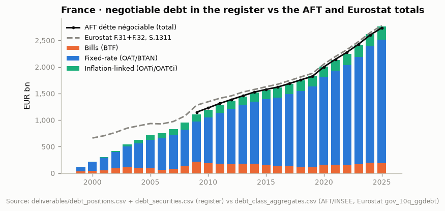
Two features of the composition matter for what follows. First, the bill stock: BTF outstanding was €107bn at end-2019, €190bn at end-2025, and the AFT plans to hold it near €215–220bn through 2026 ext. A bill stock of that size is a rolling €200bn+ of one-year-or-less funding at the €STR-linked rate, which the engine below prices at the short end of the OAT curve. Second, linkers: 8% of the stock at nominal, 11% uplifted. Their uplift accrues as interest in the national accounts (ESA 2010 §4.46), so with inflation at 2% they contribute roughly €6bn a year to D.41 before any coupon; in 2022–2023 that was €5–8bn (Figure 8).
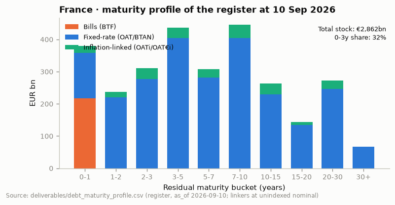
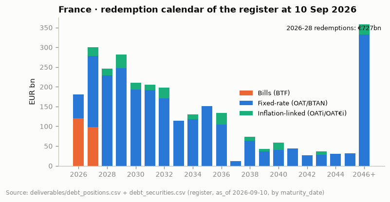
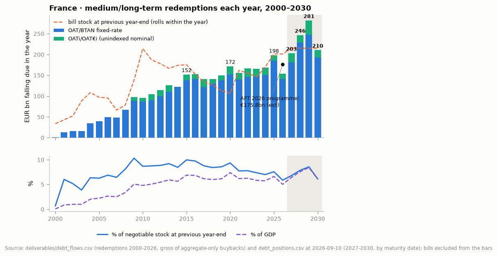
General-government interest (COFOG 01.7, the package's GF01_7) fell from 3.8% of GDP in 1996 to 1.4% in 2020, on a falling average coupon rather than a falling stock: the stock rose the whole time. It was 2.0% in 2024 (€59bn) and about 2.2% in 2025 (€65bn, the AMECO-stitched value; the Eurostat outturn arrives in October). Net interest was already 1.8% of GDP in 2024 against a primary deficit of 3.9%, so the primary balance, not interest, made the 2024 deficit. That ordering is about to flip.
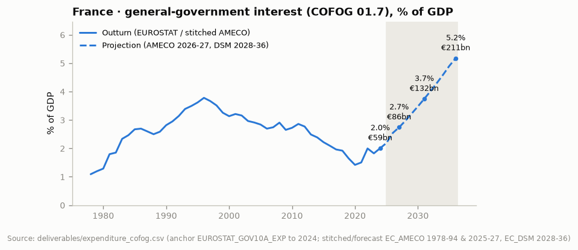
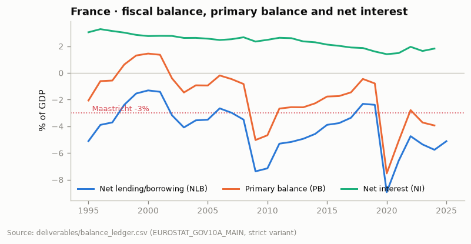
The register makes the mechanism concrete. The nominal-weighted average coupon on the fixed-rate stock bottomed at 1.54% at end-2022, was 1.97% at end-2025 and is 2.14% at the September snapshot (Figure 6). The lines maturing in 2027–2028 carry coupons of 0–1% (the 0% November 2029/2030/2031 and 0.5–1.25% lines of 2019–2022 issuance); they are replaced at 3.5–4.4%. The AFT's own new-issuance rate has climbed from 3.45% in February 2026 to 4.23% at the 3 September auction ext. Nothing a government does in 2027 changes the coupons on the €301bn that matures that year; policy only changes the rate on the replacement and the size of the addition.
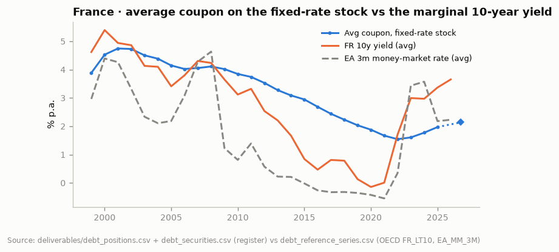
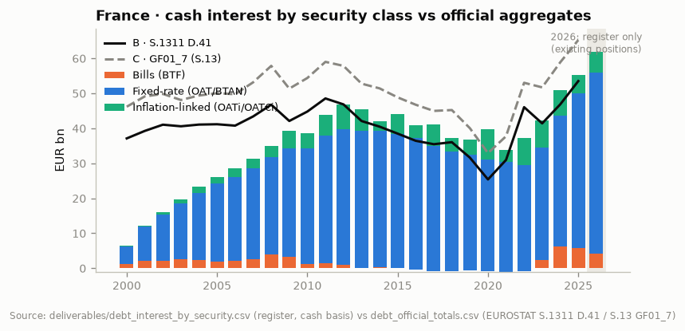
Redbox now rolls the register forward (module ggfiscal.debt.simulate, new in this session). Each year the engine matures what the register says matures, pays the coupons it says are owed, accrues uplift on the linkers at 2%, prices the bill stock at the short end, finances the general-government deficit (primary balance declared, interest endogenous) at the marginal OAT yield in the AFT's 2025 mix of tenors, and feeds the interest back into next year's deficit. The Bund curve is held flat at today's levels (3-month 2.5%, 10-year 3.4%); everything that differs between scenarios is the primary balance, the spread, the bill stock and the tenor mix. The current path is not the government's trajectory, which promises 3% by 2029; it is consolidation at 0.4 pp of GDP a year, roughly what has been delivered on average since the EDP opened, with a spread easing from 85 bp to 70 bp. Every number is declared in the assumptions table in section 8.
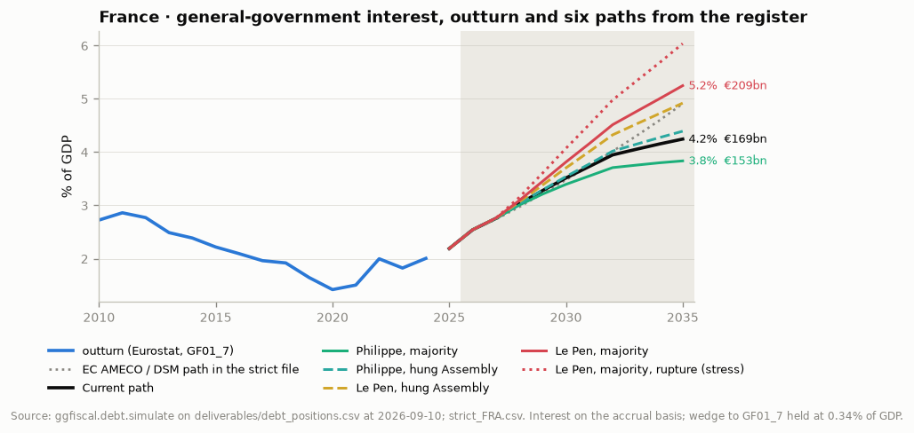
How big is the loop? Figure 9 splits each scenario's 2030 interest gap to the current path into the spread (re-run the scenario with its spread but the current path's primary balance), the volume (its primary balance and issuance strategy with the current path's spread), and the interaction, which is the loop proper: the extra issuance that the extra interest itself requires, priced at the wider spread. In the Le Pen-majority case the 2030 gap is €10bn, of which €8bn is spread, €2bn is volume and the interaction is under €1bn; by 2035 the gap is €34bn with €1.4bn of interaction. The arithmetic loop is small on a ten-year view because interest is a flow of a few per cent of a stock that turns over slowly. The pricing loop is what moves quickly, and it has already moved: the spread's annual average has risen every year since 2021 (38 → 76 bp) and is near 90 bp now, the widest since 2012, with three downgrades in 2025 (Fitch, S&P, DBRS) and negative outlooks at Moody's and Scope ext.
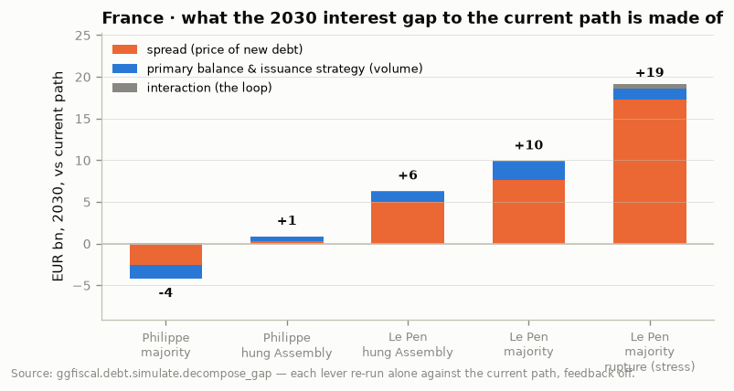
The register's average residual maturity rose from 6.5 years (2009) to a peak of 8.5 years at end-2022 as the AFT sold 30- and 50-year paper into negative real yields; it is 8.3 years at end-2025 and the AFT reports 8 years 142 days at 31 August 2026, down from 8 years 180 days in June ext. The aggregate has barely moved. What has moved is the flow: the average maturity at issue of fixed-rate paper was 12.6 years in 2021, 11.2 in 2024, 10.4 in 2025 and 10.3 so far in 2026 (Figure 10, right). The 20–30 and 30+ buckets that took 15% of gross issuance in 2021 took 10% in 2025 (Figure 11).
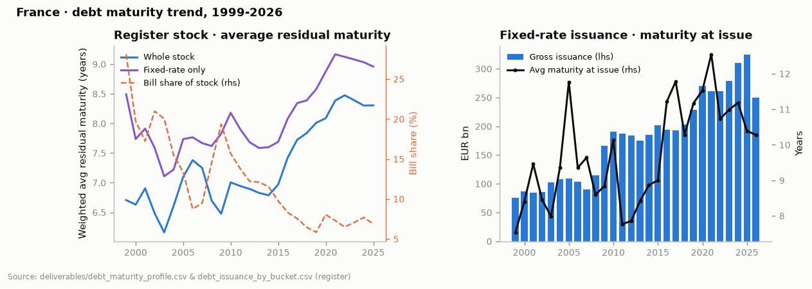
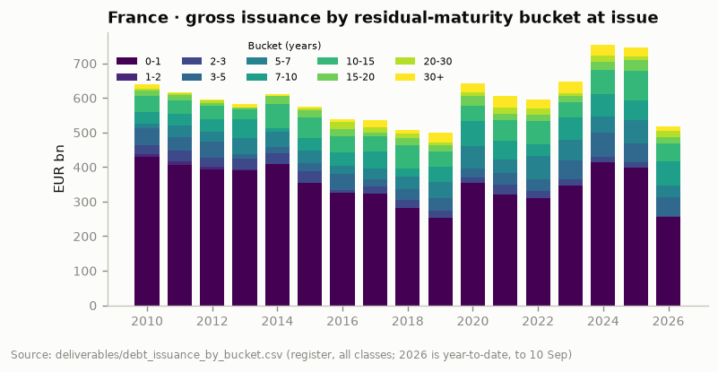
Three readings of this, and the AFT will offer the first. (i) It is demand-led: the long end has lost the Dutch and German pension bid and the Japanese carry bid, so the AFT issues where the book is, which is 3–10 years. (ii) It is cost-led: with a curve that steepened 2024–2026 and a spread that is largest at the long end, the AFT is paying up least at 5–7 years and the maturity mix follows. (iii) It is a choice about roll-over risk that the AFT would rather not make explicit: every year of average maturity given up raises the share of the stock that reprices inside the next presidential term. On the register, 32% of the stock matures within three years, and term-debt redemptions climb from €198bn in 2025 to €281bn in 2029: 8.6% of the stock, back towards the 8.5–10% of 2009–2016 after a decade in which lengthening had brought it down to 7–8%, and 8.4% of GDP, above any year since the register begins. In the Le Pen scenarios the engine assumes the AFT does what debt offices under pressure do, which is lean on bills (+€45–85bn) and shorten the tenor mix by one to three years; that is cheaper in year one and is the mechanism by which a spread shock in 2028 becomes a permanent feature of the average cost by 2032.
The bill stock deserves its own line. BTF outstanding was 5.8% of the stock in 2019, 6.9% at end-2025, and the AFT's plan holds it near €215–220bn through 2026. At 2.5–2.7% that costs €5–6bn a year and is the one part of the stock that reprices to the ECB within a year: a 100 bp policy move is €2bn of annual interest with no lag, and the same figure is what a 40 bp widening of the BTF spread to €STR would cost in a stress.
Redbox does not yet carry a holdings overlay for France (DD11 is built for the UK's APF only), so the holder split below is the Banque de France's quarterly survey as reported for end-March 2026 ext, and should be checked against the AFT's bulletin before it is quoted back to them. What Redbox does carry is the rate sensitivity of the instrument each holder owns: the table prices every OAT in the register at today's curve and gives its modified duration.
| Holder (end-Q1 2026) | Share of negotiable debt | ≈ EUR bn | MTM loss per 100 bp, EUR bn | Behaviour when rates rise |
|---|---|---|---|---|
| Non-residents | 57.5% | 1,670 | 87 | About half euro-area. The non-euro half (Japan, Asian reserve managers) sold €30bn in 2024 and is the swing buyer now; the group that leaves first and returns last. |
| Other French residents, incl. Banque de France (Eurosystem: €488bn at end-June 2026) | 20.6% | 598 | 31 | The Eurosystem is a passive seller: ≈€10bn a month of run-off, no reinvestment. The TPI is the only conditional buyer. |
| French banks | 10.5% | 305 | 16 | Mostly amortised cost, held for liquidity ratios; insensitive to mark-to-market, sensitive to ratings, repo haircuts and the sovereign-bank loop. |
| French insurers | 9.6% | 279 | 14 | Euro-fund books, long duration (above-average loss). Buy on inflows; inflows reverse with rates and with any assurance-vie or wealth-tax proposal. |
| French funds (OPCVM) | 1.8% | 52 | 3 | Money-market funds in bills; price-insensitive, size-limited. |
Shares: Banque de France / AFT survey, end-March 2026, as reproduced in the AFT bulletin (external, unverified against the primary table). Loss per 100 bp: share × the register's €151bn (bonds only, bills excluded), an approximation that assumes each holder owns the average duration; insurers and the Eurosystem are longer than average, banks shorter.
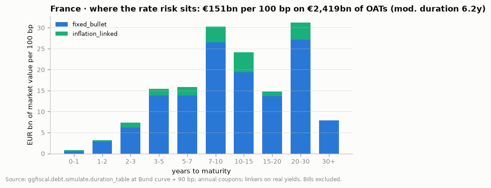
The Eurosystem is the one holder whose behaviour is known: it is leaving. French holdings under PSPP and PEPP fell from €546bn at end-2025 to €488bn at end-June 2026, about €10bn a month, with no reinvestment since PEPP ended in January 2025 ext. That is €110–120bn a year of extra net supply the market must absorb on top of the deficit, before any 2027 shock. The TPI is the counterweight, and its conditions (compliance with the EU fiscal framework, no severe imbalances, sustainability) are exactly the ones France is furthest from. Whether the Governing Council would treat a post-election OAT sell-off as "unwarranted, disorderly dynamics" is the single most important unknown in the Le Pen cases, and the AFT will not answer it, but its view of what the ECB has told the Trésor is worth having.
Non-residents hold 57.5%, the highest share among the G7, about half of them in the euro area. The non-euro half is the rate-sensitive part: the Japanese sold more than €20bn of OATs between June and November 2024 and about €30bn over the year as the yen carry trade lost its logic ext; the same group is now the swing buyer when OATs yield more than BTPs. The OAT–BTP 10-year spread inverted in August 2026 (OATs 5 bp over BTPs at one point, France the highest-yielding sovereign in the euro area) ext. For a holder of our size the relevant question is not whether non-residents sell in a shock but whether they are still there to buy the €350–450bn of gross issuance a year that Figure 15 implies.
French insurers and banks (9.6% and 10.5%) are the domestic backstop, and both have limits. Life insurers took a record €44bn of net inflows in 2025 ext, largely into euro funds that buy OATs; those inflows are a function of the OAT yield versus regulated savings (Livret A) and reverse when policy rates rise or when a wealth-tax or assurance-vie tax proposal appears in a budget, which is a live possibility in either 2027 outcome. Their sovereign book is only about 19% of assets after look-through, so the capacity to add is finite. Banks hold OATs largely at amortised cost for liquidity purposes and are therefore insensitive to mark-to-market but sensitive to the sovereign-bank loop through ratings and repo haircuts. Neither group is the buyer of a 2027 supply surge; that is the point of the €151bn figure: it is mostly on the books of holders who can and do leave.
The first round is on 18 April 2027 and the second on 2 May; legislative elections follow in June. Marine Le Pen is eligible: the Paris Court of Appeal on 7 July 2026 upheld the conviction but cut the ineligibility to 45 months with 30 suspended, and the firm part had already run ext. The polling average in September has Bardella and Le Pen at 34% and 33.5% in the first round and Philippe at 17.5% when he runs without Attal ext. The four configurations the committee asked for are therefore not symmetric probabilities; they are the two candidates most likely to face each other and the two Assembly outcomes each could get. The scenario assumptions are declared in full in section 8; the short version:
All scenarios add a feedback of 3 bp of spread per point of GDP by which the debt ratio exceeds the current path. The Bund curve is the same everywhere. Growth is the same everywhere, which flatters the Le Pen cases (the RN programme is expansionary in year one) and the Philippe majority (consolidation costs growth in year one); neither effect changes the ordering.
| Scenario | Spread 2030, bp | 10y OAT 2030 | GG interest 2028, €bn | 2030, €bn | 2030, % GDP | 2035, €bn | 2035, % GDP | Deficit 2030, % GDP | Debt 2030, % GDP | Debt 2035, % GDP | Gross OAT issuance 2030, €bn |
|---|---|---|---|---|---|---|---|---|---|---|---|
| Current path | 70 | 4.1% | 98 | 121 | 3.5 | 169 | 4.2 | 4.6 | 123 | 127 | 393 |
| Philippe, majority | 45 | 3.9% | 98 | 117 | 3.4 | 153 | 3.8 | 3.6 | 121 | 119 | 362 |
| Philippe, hung Assembly | 76 | 4.2% | 98 | 122 | 3.5 | 175 | 4.4 | 4.9 | 124 | 130 | 403 |
| Le Pen, majority | 139 | 4.8% | 100 | 131 | 3.8 | 209 | 5.2 | 6.4 | 128 | 142 | 457 |
| Le Pen, hung Assembly | 120 | 4.6% | 99 | 128 | 3.7 | 196 | 4.9 | 5.8 | 126 | 136 | 434 |
| Le Pen, majority, rupture (stress) | 212 | 5.5% | 102 | 140 | 4.1 | 241 | 6.0 | 7.2 | 129 | 148 | 489 |
Redbox: ggfiscal.debt.simulate, run at the 10 September 2026 register. Interest is general government on the accrual basis (GF01_7 concept). Gross issuance is medium/long-term including the buybacks the register cannot see, so it overstates the AFT's programme definition by roughly the buyback volume (€25–40bn a year).
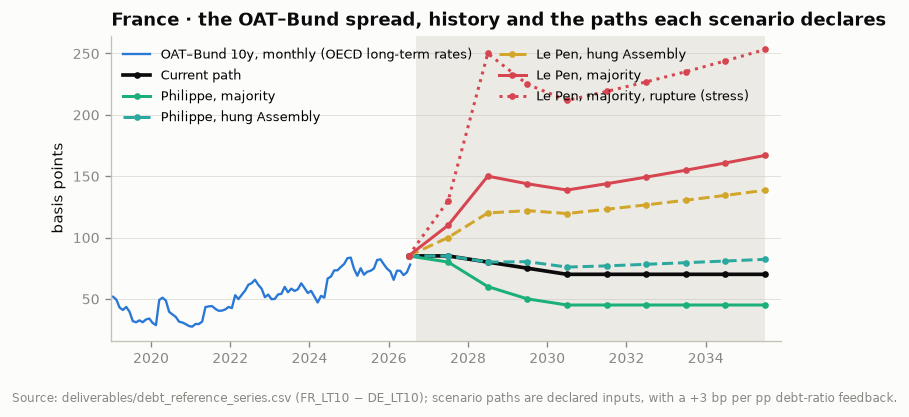
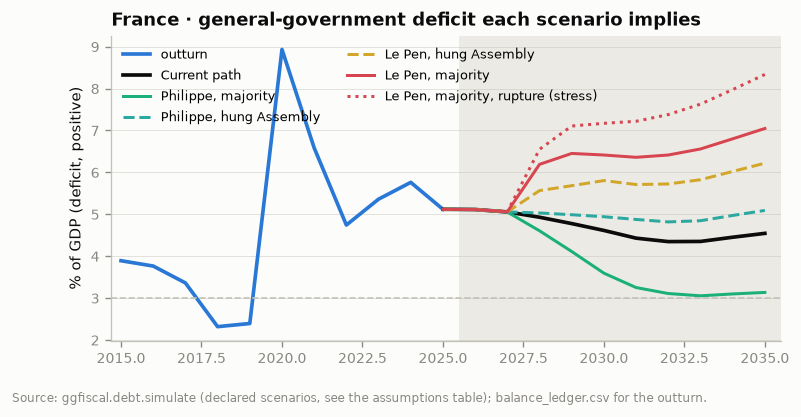
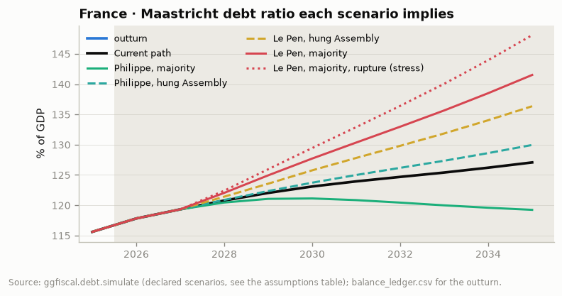
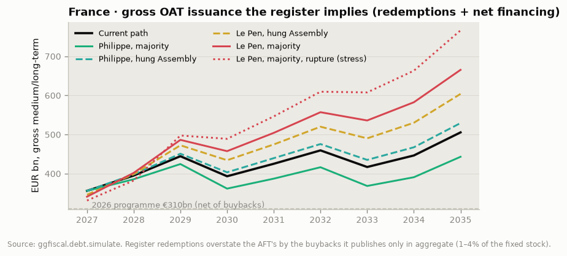
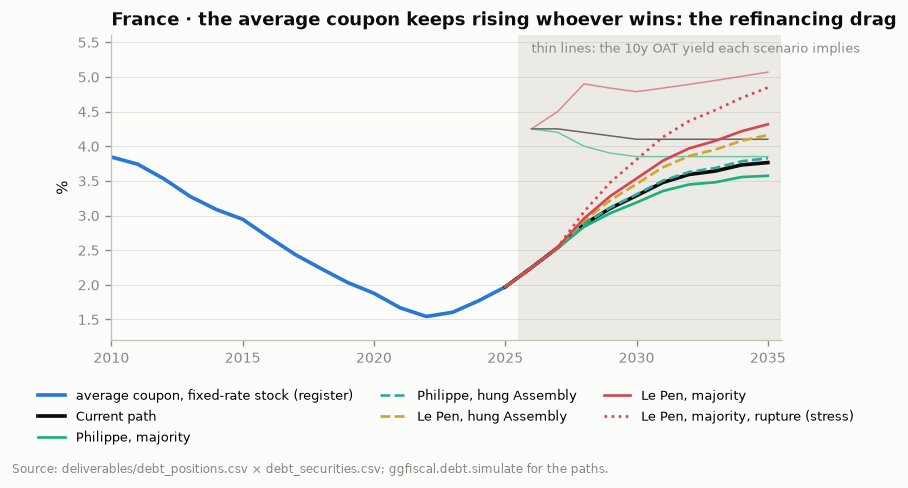
Three things follow. First, the distribution of outcomes for the interest bill is skewed: the best case saves €16bn a year by 2035 against the current path, the two Le Pen cases cost €23–34bn and the stress €62bn. A position sized on the current path is short a put on French politics. Second, the hung-Assembly outcomes are closer to the current path than to their majority counterparts on interest, but not on issuance: a hung Assembly under either president means budgets by 49.3, no consolidation, and a spread that stays where 2025–2026 put it. The market has already priced "hung", which is why 85–90 bp is the current level; it has not priced "Le Pen majority", which the engine puts at 150 bp on the 2012 precedent. Third, the Le Pen-majority case is not a solvency case on this arithmetic: debt at 142% of GDP in 2035 with interest at 5.2% is Italy in 2012, not Greece. It becomes one only if the pricing loop runs faster than the fiscal loop, which is a question about the ECB and the marginal buyer, not about French arithmetic. That is why the questions in section 7 are about exits, not about levels.
Ratings and the crossover. France is A+ stable at S&P (October 2025) and Fitch (September 2025), AA at DBRS, Aa3 negative at Moody's and AA- negative at Scope ext. Italy is on an upgrade path. A Moody's downgrade to A1 would put France at single-A at three of the four agencies that matter for index weights and repo schedules, and the OAT–BTP inversion of August 2026 says the market has already priced that crossover; some analysts have the OAT–Bund spread at 105 bp by end-Q1 2027 on it ext. Worth asking the AFT what feedback it has had from index providers and from the ECB collateral desk on the single-A question.
The EDP and the Commission. The procedure opened in July 2024; the January 2025 Council recommendation caps net expenditure growth at 0.8% (2025) and 1.2% (2026–2028) with correction by 2029, and the Commission's spring 2026 forecast (deficit 5.1% in 2026, debt 118.1% at end-2026) has France off the path ext. No scenario in section 5 corrects by 2029. The interaction with the TPI conditions is the reason this is more than a compliance question.
The PLF 2027. The 2026 budget passed on 2 February 2026 by 49.3 after two censure motions failed, at a 5.0% deficit (from 4.6% planned) with concessions to the PS and €6.5bn more for defence ext. The PLF 2027 is presented within weeks and is the last budget before the election: the AFT's 2027 financing programme (published in December) will be built on it. The AFT's Chief Economist will know the assumed 2027 deficit and the debt-service line; they are the numbers to get.
Data the AFT could give and does not. Redbox's French chains are blocked at step A because the État's own cash interest and financing tables (PLF programme 117, the tableau de financement) are not machine-readable to us (OQ-8), and the register is gross of buybacks because rachats are published only in aggregate. Per-line buyback volumes and the programme-117 tables would close the French interest chain to the euro. A request in the room costs nothing.
The CADES and the social perimeter. Eurostat's S.1311 securities run €43bn above the AFT's État total at end-2025 (Figure 1): CADES and the other central bodies. CADES' amortisation schedule (to 2033) is a hidden source of negotiable-debt demand replacement in the late 2020s, and a Le Pen pension rollback would reopen the question of who funds the social deficit.
The counterpart is the AFT's Chief Economist and Head of Research, not its chief executive or its head of trading. That changes the questions in three ways. He owns the macro and rates assumptions behind the financing programme, the debt-service projection that feeds the PLF, the investor research and the monthly bulletin; he does not decide the programme, the tenor mix or the buybacks, and he will not comment on politics, the ECB or the rating agencies. So every question below is phrased as "how do you model", "what does your research show", "what is your reading", which he can answer in full. Second, a head of research will engage with the register: lead with the fact that Redbox reconciles security-by-security interest to S.1311 D.41 within ±€6bn and that the fixed lines sit 1–4% above the AFT's totals because buybacks are published only in aggregate, and the data asks follow naturally as an exchange rather than a request. Third, his career before the AFT ran through the Trésor's state-shareholding agency (the APE, managing the State's stakes in EDF, RTE and Enedis) ext: a corporate-finance lens. Frame the interest bill as a refinancing wall and the spread as a cost of capital and he will meet the argument on that ground. Check the spelling and title on aft.gouv.fr before the meeting; the profile could not be verified online.
Everything marked Redbox or unmarked in a figure source line is read from the flat files in deliverables/ of run 20260911T000629Z: the per-security register (D-S10-007), the reconciliation chains, the balance ledger and the strict matrix. Everything marked ext is from a web search on 18 September 2026 by a research agent; the AFT's own site was unreachable to it (HTTP 503 on every fetch), so AFT-attributed figures come from press and parliamentary reproductions of AFT releases and should be verified on aft.gouv.fr before being quoted to the AFT. The scenario engine and its charts are new in this session (D-S11-001): src/ggfiscal/debt/simulate.py, src/ggfiscal/report/briefing_fra.py, src/ggfiscal/report/briefing_fra_scenarios.py, the notebook notebooks/briefing_FRA_AFT.ipynb, and the outputs under reports/briefing_FRA_AFT_2026-09/.
| Item | Value | Source or reason |
|---|---|---|
| Register | Positions at 10 Sep 2026, 106 bonds and 30 bill lines outstanding | debt_positions (office snapshot) |
| Nominal GDP | 2025 €2,979bn; 2026 €3,056bn; 2027 €3,151bn; then +3.0% a year | ledger; strict_FRA (EC AMECO); declared |
| Primary balance, current path | −3.1 (2025), −2.7, −2.5, −2.1, −1.7, −1.3, −0.9, −0.6, −0.5 % of GDP | declared: 0.4 pp a year |
| Bund curve | 3m 2.50, 2y 2.90, 5y 3.15, 10y 3.40, 30y 3.75 %, flat through 2035 | EA_MM_3M Aug 2026, DE_BUND_YIELD_10Y 7 Sep 2026; 2y/5y/30y declared |
| Spread term structure | 0.15 / 0.45 / 0.75 / 1.00 / 1.15 × the 10y spread at 3m / 2y / 5y / 10y / 30y | declared |
| Issuance mix | AFT 2025 shares by bucket, with the AFT's own residual maturity at issue per bucket | debt_issuance_by_bucket |
| Inflation (uplift) | 2.0% a year, linkers 7% of new issuance at the real yield | declared |
| Deficit financed by negotiable debt | 0.90 | Δ(F.31+F.32) / −NLB, 2015–2025, from the bundle |
| Wedge to GF01_7 | 0.34% of GDP (€10.1bn in 2025) | GF01_7 less register cash interest, 2025 |
| Maastricht debt, end-2025 | 115.6% of GDP; accumulates the deficit, no stock-flow adjustment | INSEE 27 Mar 2026 (ext); declared |
| Spread feedback | +3 bp per pp of GDP of debt-ratio deviation from the current path | declared |
| 2026 | Bridge year: interest = strict file (€77.7bn, AMECO); only the remaining 31% of the year is financed | the register already holds the issuance to 10 Sep |
| Scenario | Primary-balance deviation, pp GDP | 10y spread, bp | Bill stock, €bn | Tenor tilt λ | Avg maturity at issue | Narrative |
|---|---|---|---|---|---|---|
| Current path | 2026 +0.0 | 2026 85, 2027 85, 2028 80, 2029 75, 2030 70 | 2026 +215.0 | 0.00 | 10.6y | Minority governments continue to pass budgets by 49.3 with concessions; consolidation at 0.4 pp a year; spread drifts back towards its 2025 average. |
| Philippe, majority | 2027 +0.0, 2028 +0.3, 2029 +0.6, 2030 +0.9, 2031 +1.0 | 2026 85, 2027 80, 2028 60, 2029 50, 2030 45 | 2026 +215.0 | 0.00 | 10.6y | Pension age towards 65 phased from 2028, spending review, EDP path met by 2030; spread compresses towards the 2015–2021 range (35–50 bp). |
| Philippe, hung Assembly | 2027 +0.0, 2028 -0.1, 2029 -0.2, 2030 -0.3, 2031 -0.4 | 2026 85, 2027 85, 2028 80, 2029 80, 2030 75 | 2026 +215.0 | 0.00 | 10.6y | A president without a majority: budgets by 49.3, consolidation slower than the current path; spread stays where 2025–2026 put it. |
| Le Pen, majority | 2027 +0.0, 2028 -1.2, 2029 -1.5, 2030 -1.5 | 2026 85, 2027 110, 2028 150, 2029 140, 2030 130 | 2026 +215.0, 2027 +230.0, 2028 +260.0, 2029 +270.0 | 0.04 | 8.8y | RN programme enacted: VAT on energy to 5.5% (≈0.5% of GDP), 2023 pension reform rolled back (≈0.5–0.8% of GDP by 2030), partial offsets; spread re-prices to the 2012 peak and stays; AFT leans on bills and shorter tenors. |
| Le Pen, hung Assembly | 2027 +0.0, 2028 -0.6, 2029 -0.8, 2030 -1.0 | 2026 85, 2027 100, 2028 120, 2029 120, 2030 115 | 2026 +215.0, 2027 +225.0, 2028 +240.0 | 0.02 | 9.6y | RN president, no majority: paralysis rather than programme; no consolidation, partial giveaways; spread above the current path but short of the 2012 peak. |
| Le Pen, majority, rupture (stress) | 2027 +0.0, 2028 -1.5, 2029 -2.0, 2030 -2.0 | 2026 85, 2027 130, 2028 250, 2029 220, 2030 200 | 2026 +215.0, 2027 +240.0, 2028 +300.0, 2029 +320.0 | 0.08 | 7.6y | Stress, not a central case: open conflict with the Commission over the EDP, TPI eligibility in doubt, spread at 250 bp; the AFT funds a growing share at the short end. |